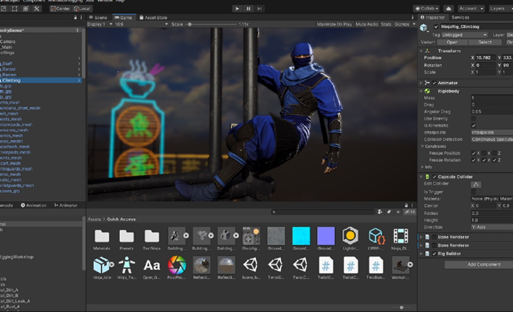

Portfolio – Web Development, Java, and Unity Programming
Welcome to my portfolio! My name is Curt P. Derren, and I specialize in creating modern websites as well as programming applications in Java and Unity. With several years of experience, I focus on delivering projects that combine both aesthetics and functionality.
What do I offer?
- Web Development – I design responsive, fast, and user-friendly websites tailored to the specific needs of my clients.
Technologies: HTML5, CSS3, JavaScript, React, WordPress. - Java Programming – I have expertise in developing software in Java, from desktop applications to web-based solutions.
Projects include: backend systems, databases, and optimization algorithms. - Applications and Games in Unity – I develop both 2D and 3D applications and games using Unity, ensuring performance, graphical quality, and a user-friendly interface.
I offer full support from design to testing and implementation.
Why work with me?
- Personalized approach – Every project is unique. I carefully analyze each client's needs to deliver solutions tailored perfectly to their requirements.
- Quality and reliability – I’m committed to writing clean, efficient code and always delivering projects on time.
- Comprehensive services – With expertise in both frontend and backend development, I provide complete solutions, from concept to deployment.
Sample Projects

Contact
Mail: example@gmail.com
Phone number: +48 792 945 912
Instagram: curtDerren
Ready to start a new project? Let’s get in touch!